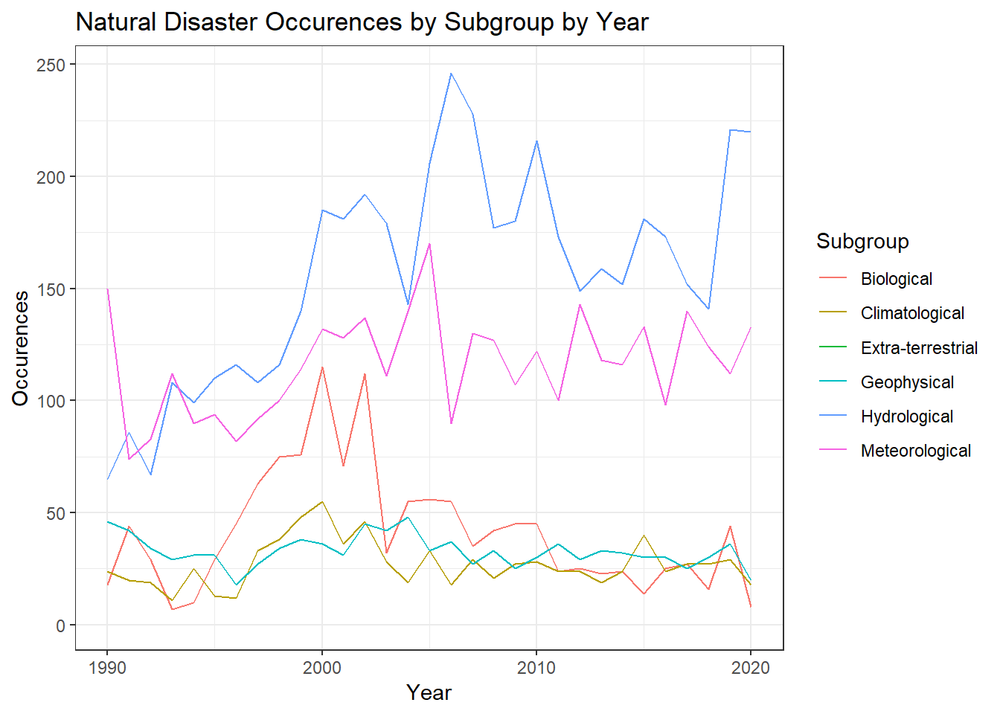
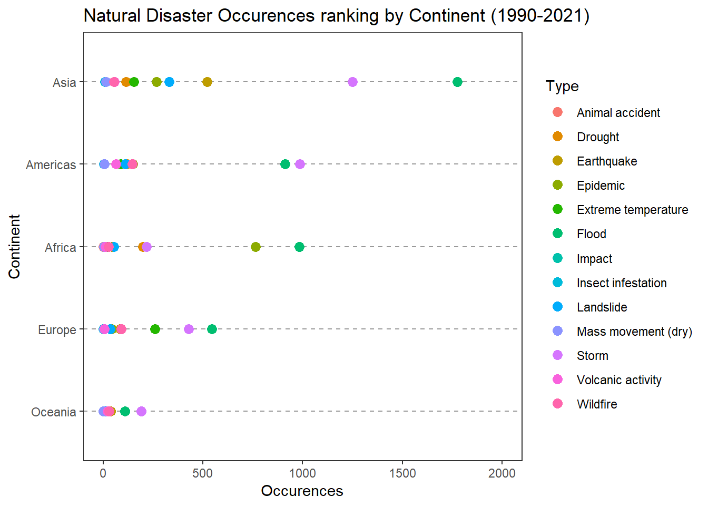
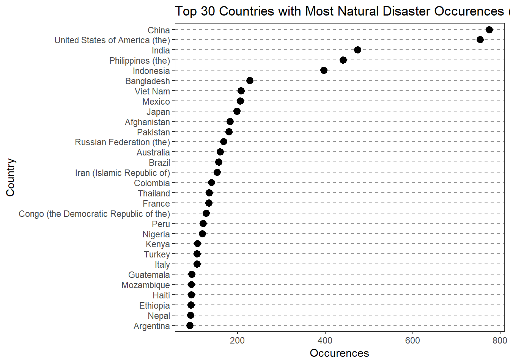
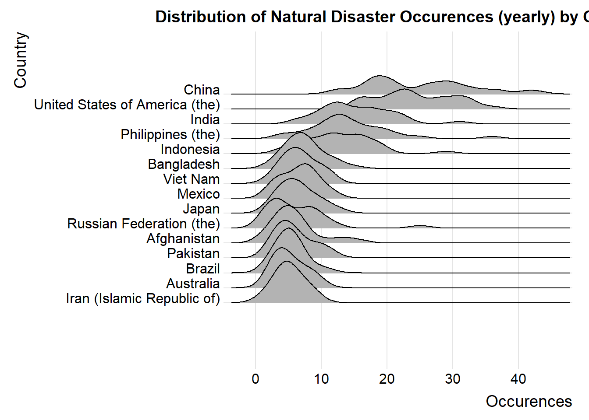
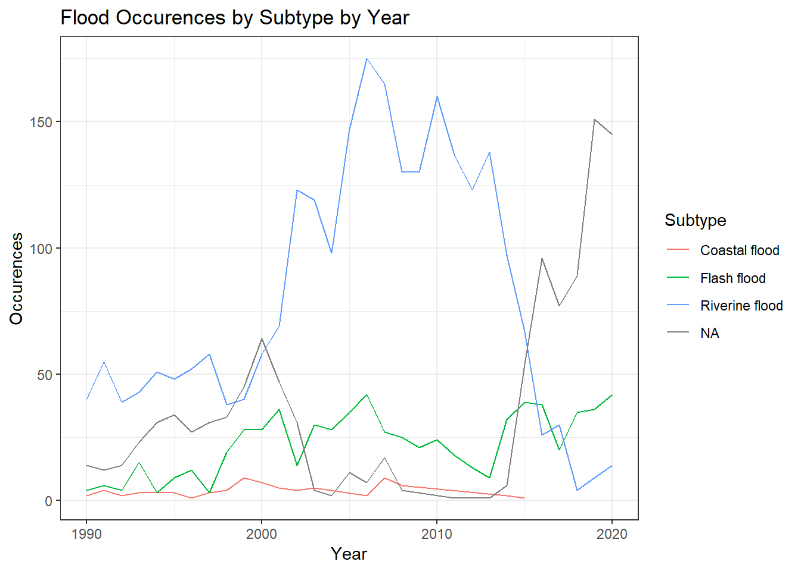
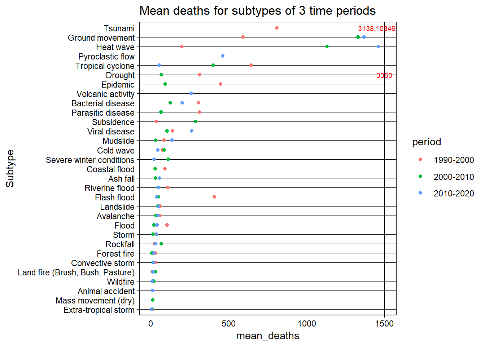

Chapter 5 Results
5.0.1 Time
We want to firstly understand time pattern of natural disasters. We are only given data from 1990 to 2020, so that would be our time focus. The above graph provides a macro look on number of natural disasters over this period of time. Note that we are not studying disaster effects on different countries/region for this part. As it is seen on the above graph, the total number of natural disasters reaches its valley around year 1991, and reaches the peak around 2000, and the number is stable and gradually decreasing from 2000 to present days.

Then we want to go a level deeper to investigate how different subgroup of natural disasters change over time. As seen in the above graph, different subgroups of disaster does not necessarily follows the macro trend analyzed above. Among all of them, hydrological, meterological and biological disasters are the top three contributors to the total numeber of disasters. Hydrological disasters can sometime account for half of the disasters recorded. The number of those subgroups of disasters slowly increase from 1990 to around 2005, and the number remains stable/ slightly decreases from 2005 to 2020. The number of the rest of the two subgroups disasters remain stable from 1990 to 2020.
## # A tibble: 2 x 3
## # Groups: Subgroup [1]
## Subgroup Type Occurences
## <chr> <chr> <int>
## 1 Hydrological Flood 4324
## 2 Hydrological Landslide 545## # A tibble: 2 x 3
## # Groups: Subgroup [1]
## Subgroup Type Occurences
## <chr> <chr> <int>
## 1 Meteorological Storm 3073
## 2 Meteorological Extreme temperature 529Next, we want to analyze time trend for different types of disasters over the years. Flood and storm are two types of nartual diasters that occur the mostly frequently. Their occurences are much higher the others as shown on the above graph. By understanding type composition for different subgroups, we see that flood is the main contributor for hydrological disasters(around 90%), and storm is the main contributor for meteorological disasters(around 85%).
5.0.2 Region
For this part of the analysis, we want to study natural disaster behaviors for different regions(continent/Country). We see from above chart that, Asia has the most number of natural disasters. America and Africa are in the 2rd and 3nd place, and their natural disaster occurrences are around half of that of Asia.

Then we look at the distribution of types of disasters for different continents. Flood and storm are top 2 most frequent disasters for all continents except Africa, and flood and storm occurrences surpass the other types of disasters by a great amount for all continents except Oceania (considering the total number of disasters is relatively small). For Asia, flood occurrences exceeds storm occurrences by a relatively significant amount. For Americas and Europe, flood occurrences and storm occurrences are closer. But we see a higher number of storms than floods in America. For Africa, Epidemic is the second highest types of natural disasters. This maybe due to its relatively weak economy and extreme weather conditions.

As the next step, we want to look at natural disasters level by different countries. We see that the top countries with the greatest number of natural disasters are China, USA, India, Philippines, and Indonesia, with majority of these countries residing in Asia. China, USA, and India are among the countries with the greatest areas. And Indonesia and Philippines have much smaller area size than the other 3, although their natural disaster occurrences are comparable with the other 3. Besides the top 5 countries, as we further go down the list from 5 to 10, most of them are Asian countries as we see on the graph.
Then, we want to look at natural disaster composition for different countries. Storms and floods are top contributors for all countries. We see that USA has the greatest number of storms out of all countries, and it’s much larger than its other disasters. We also see that landslide is another top contributor for the top countries with the most number of disasters.

The above graph shows the distribution annual disaster for different countries. We see that for the top 5 countries mentioned, the spread is much bigger, which means that there are more variation. For the rest of the countries, their annual disaster occurrence is more concentrated.
5.0.3 Country and Time

For this part of analysis, we want to understand if there is any time pattern of disasters for different countries. As seen in the above graph, there seems to be no significant time pattern for any of the countries on the aggregate level of disasters.

We then want to understand if there is any trend for specific type of disaster for top 5 countries. We see that for China and India, flood reaches its peak around year 2005, and then decreases to pre-2005 level. Indonesia is experiencing an increasing number of flood over time, and the number reaches the peak in year of 2020. We don’t see a significant time pattern of flood for any of the countries.
5.0.4 Flood and Storm
We want to further look at two types of most frequent natural disasters: storms and floods. 
Firstly, we want to understand subtypes occurrences for floods. We see that Riverine flood is the most frequent subtype of flood. The fact that “NA” increases from 2015 and Riverine flood decreases from 2015 may mean that we are missing data for categorization of Riverine flood from 2015, so it may not mean that this Riverine flood decreases over time objectively.
Then we want to understand what the origin of flood. And as we see on the graph, heavy rains is the biggest contributor.

Then we analyze storm similarly. We see that tropical cyclone appear the most frequently.
“Heavy Rains” is also the biggest origin for storm.

As we see there is an overlap of origin for different types of disasters. We want to understand what are the most common origins are, and what they cause. As we see on the above graph, different types of rain are the number one origin for floods, landslides and storms. We also see that trainsopical cyclone is the top origin for drought.

And for different continents, the biggest disaster origin is the same, which is “Heavy Rain”. We also see a great amount of missing information as well.